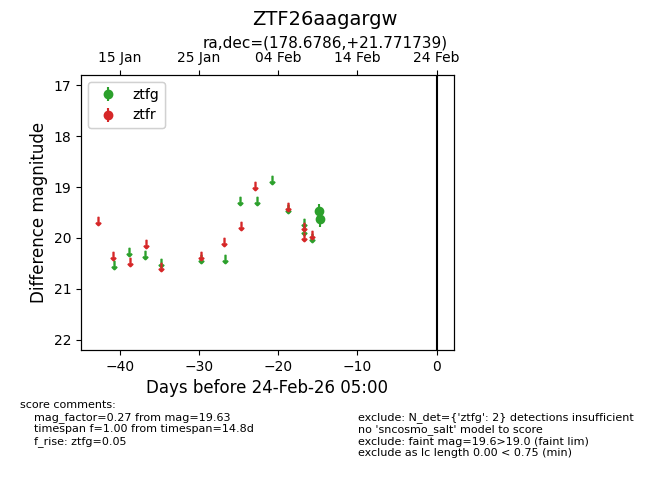
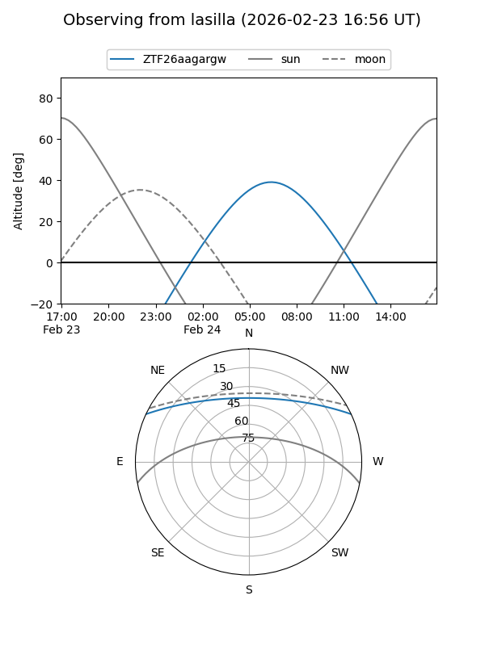
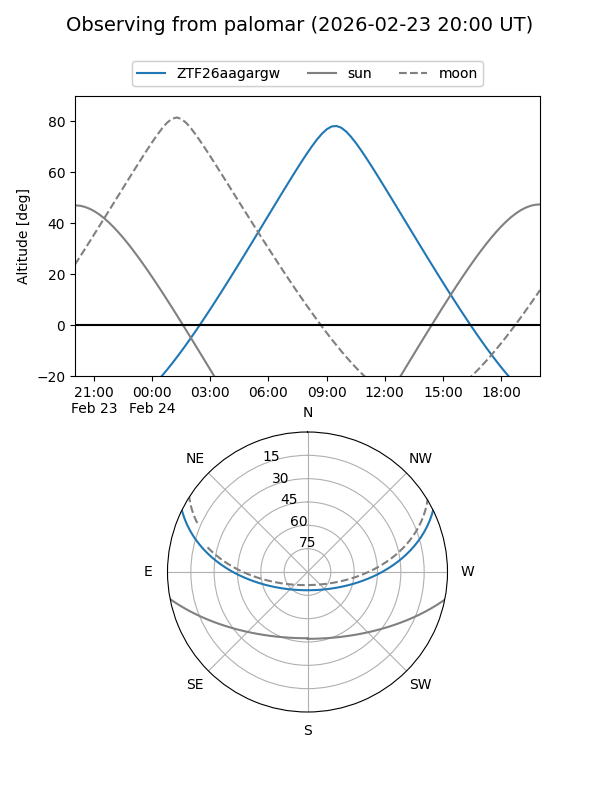

ZTF26aagargw
Target ZTF26aagargw at 2026-02-24 09:08
Aliases and brokers:
FINK: link
Lasair: link
ALeRCE: link
alt names
ZTF26aagargw (ztf,fink_ztf)
Coordinates:
equatorial (ra, dec) = 178.6786,+21.77174
equatorial (HMS+DMS) = 11:54:42.86,+21:46:18.26
galactic (l, b) = (232.4059,+76.03590)
Flags:
Photometry:
last ztfg=19.63
2 ztfg detections
Lightcurve

Visibility


Additional plots